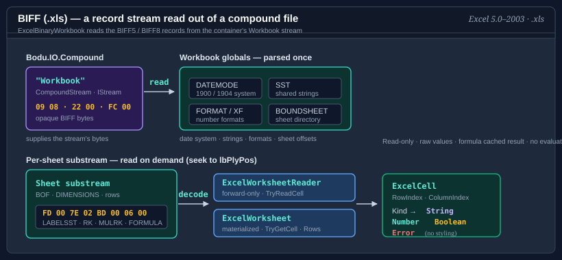

Bodu.Formats.Excel.Binary

Bodu.Formats.Excel.Binary is a narrow, read-only reader for the Excel binary workbook format (.xls) — BIFF8 (Excel 97–2003) and BIFF5 (Excel 5.0/95). Part of the Binary Formats & I/O topic, it surfaces the raw cell values of each worksheet — strings, numbers, booleans, and errors, including a formula cell's cached result — without formula evaluation, styling, or any higher-level interpretation.
An .xls file is a BIFF5 or BIFF8 record stream stored inside the Workbook stream of an OLE2 compound file. This package interprets that record stream as worksheets and cells; the container around it is read by Bodu.IO.Compound, and the record framing and decoding come from Bodu.IO.Biff — this package is built on both. ExcelBinaryWorkbook is the disposable session: it parses the workbook globals once and reads each sheet on demand.

| Concept | Type | Role |
|---|---|---|
| Workbook | ExcelBinaryWorkbook | Opens the .xls container, parses the globals, and lists the sheets; static OpenRead / Open factories. |
| Streaming reader | ExcelWorksheetReader | The forward-only, low-allocation cell surface — TryReadCell, ReadCells, ReadRows. |
| Materialized sheet | ExcelWorksheet | A randomly addressable view — TryGetCell(row, column, …) and grouped Rows. |
| Cell | ExcelCell | An immutable cell value: position, ExcelCellKind, and the typed value. |
Key concepts
| Concept | Plain-language meaning |
|---|---|
| BIFF8 | The Excel 97–2003 binary record format: a flat stream of type-length-body records inside the container's Workbook stream. BIFF5 is its Excel 5.0/95 predecessor, with code-page byte strings in place of Unicode; the record framing and decoding for both come from Bodu.IO.Biff. |
| Workbook globals | The records parsed once at open time — the date system, the shared string table, the number-format table, and the sheet directory. |
| Cell kind | Each populated cell is classified as a string, number, boolean, or error; blank cells are simply not returned, so a worksheet is a sparse sequence. |
| Serial date | Excel stores dates as floating-point serial numbers; the reader never infers a date, but flags date-formatted numbers and offers a converter. |
| Used range | The half-open span of rows and columns a sheet's DIMENSIONS record declares — an upper bound, not a tight fit. |
For the full glossary, see Core concepts.
How opening a workbook works
OpenRead / Open parse the workbook globals once — the date system, the shared string table, the number-format table, and the sheet directory — then keep the compound-file container open. No sheet body is read at open: each sheet is read on demand by seeking to the byte offset its directory entry records, so a single sheet can be read without parsing the others and the whole workbook is never materialised in memory. The session owns the container and, unless LeaveOpen is set, the source stream, so dispose it (a using declaration suffices) when reading is complete.
Scope and limitations
- Read-only. The reader surfaces values; it never writes, evaluates formulas, applies styles, or interprets charts and macros.
- Raw values. A formula cell yields its cached result (the value Excel last stored), not a recomputation. Numbers are raw
doublevalues with no date interpretation applied. - BIFF8 and BIFF5. The reader accepts BIFF8 (Excel 97–2003) and BIFF5 (Excel 5.0/95) workbooks, exposing which through BiffVersion; other BIFF versions are reported through ExcelBinaryUnsupportedException rather than mis-parsed; encrypted workbooks raise ExcelBinaryEncryptedWorkbookException.
Important
A formula cell is surfaced as whichever ExcelCellKind its cached result holds — there is no distinct "formula" kind, and the cached value is the one Excel last stored, not a recomputation. Treat a numeric cell as a date only when IsDateFormatted says so, and convert it with the workbook's own DateSystem.
Worked example — open, list, read
using Bodu.Formats.Excel;
using ExcelBinaryWorkbook workbook = ExcelBinaryWorkbook.OpenRead("rates.xls");
foreach (ExcelWorksheetInfo sheet in workbook.Worksheets)
Console.WriteLine($"{sheet.Index}: {sheet.Name} ({sheet.Dimensions.RowCount} rows)");
using ExcelWorksheetReader reader = workbook.OpenWorksheet("Data");
while (reader.TryReadCell(out ExcelCell cell))
{
if (cell.Kind == ExcelCellKind.Number)
Console.WriteLine($"{ExcelCellReference.ToA1(cell.RowIndex, cell.ColumnIndex)} = {cell.NumberValue}");
}
Common scenarios
| Scenario | Reach for |
|---|---|
| Open a workbook from a path or stream | ExcelBinaryWorkbook.OpenRead(path) / OpenRead(stream) |
| List the sheets and their used ranges | Worksheets |
| Stream a sheet's cells with minimal allocation | workbook.OpenWorksheet(name) → TryReadCell / ReadCells |
| Group a sheet's cells into rows | ExcelWorksheetReader.ReadRows() |
| Read a sheet by position (random access) | workbook.ReadWorksheet(name) → ExcelWorksheet.TryGetCell(...) |
| Tell whether a numeric cell is a date | IsDateFormatted |
| Convert a serial number to a calendar date | ExcelSerialDate.FromSerialDate(value, workbook.DateSystem) |
| Convert coordinates to an A1 reference | ExcelCellReference.ToA1(row, column) |
| Read authored document metadata | Properties |
| Skip optional work for throughput | ExcelBinaryReaderOptions { ReadDocumentProperties = false, DetectDateFormats = false } |
Headline types — Bodu.Formats.Excel
| Type | Purpose |
|---|---|
| ExcelBinaryWorkbook | The disposable read-only session — OpenRead / Open factories, Worksheets, Properties, DateSystem, BiffVersion, and the OpenWorksheet / ReadWorksheet surfaces. |
| ExcelBinaryReaderOptions | Trades optional metadata work for throughput and governs stream ownership — LeaveOpen, ReadDocumentProperties, DetectDateFormats. |
| ExcelWorksheetReader | Forward-only, low-allocation cell reader — TryReadCell, ReadCells, ReadRows. |
| ExcelWorksheet, ExcelRow | The materialized, randomly addressable worksheet and its grouped rows. |
| ExcelCell, ExcelCellKind, ExcelErrorCode | The immutable cell value, its classification, and the spreadsheet error codes. |
| ExcelWorksheetInfo, ExcelWorksheetDimensions | The sheet descriptor (name, index, visibility, type) and its declared used range. |
| ExcelSerialDate, ExcelDateSystem | Serial-date conversion and the 1900 / 1904 date systems. |
| ExcelCellReference | A1 reference conversion — ColumnName, ToA1, TryParseA1. |
| ExcelWorkbookProperties | The flattened document properties read from the OLE summary-information streams. |
| ExcelBinaryFormatException, ExcelBinaryUnsupportedException, ExcelBinaryEncryptedWorkbookException, ExcelBinaryWorkbookStreamNotFoundException | Malformed-record, unsupported-version, encrypted-workbook, and missing-stream errors. |
Where to go next
- Core concepts — full vocabulary: BIFF record, workbook globals, shared string table, cell kind, serial date, used range.
- Getting started — install + minimal samples for opening, listing, and reading cells.
- Bodu.Formats.Excel.Binary guides — reading workbooks, cell values and dates, and the streaming-vs-materialized surfaces.
- API reference — Bodu.Formats.Excel.
- Binary Formats & I/O topic overview — where the format reader sits above the container reader.
- For the container reader beneath this package, see Bodu.IO.Compound; for the record codec, see Bodu.IO.Biff.